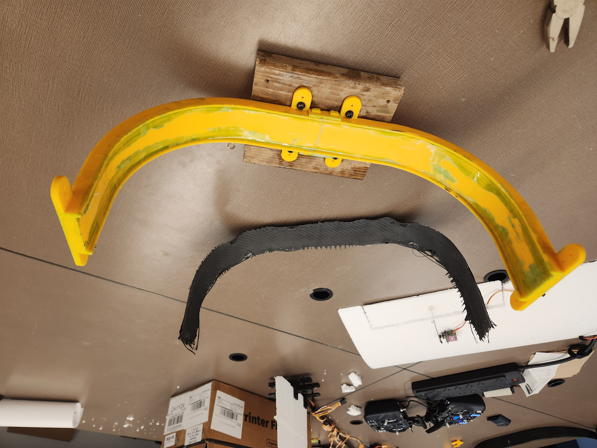
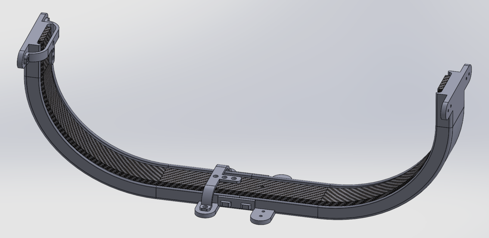
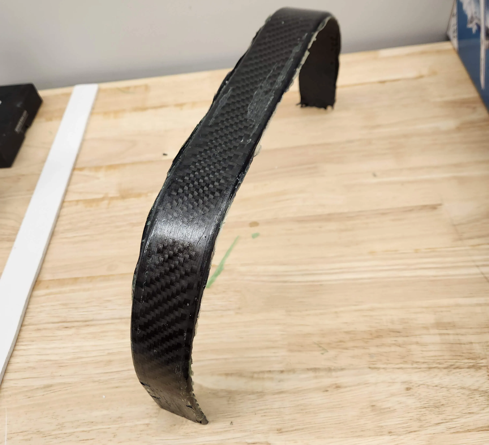
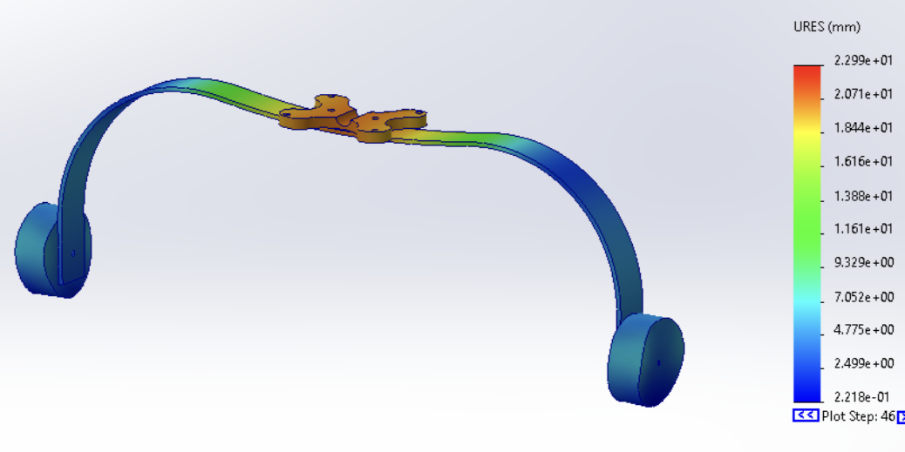
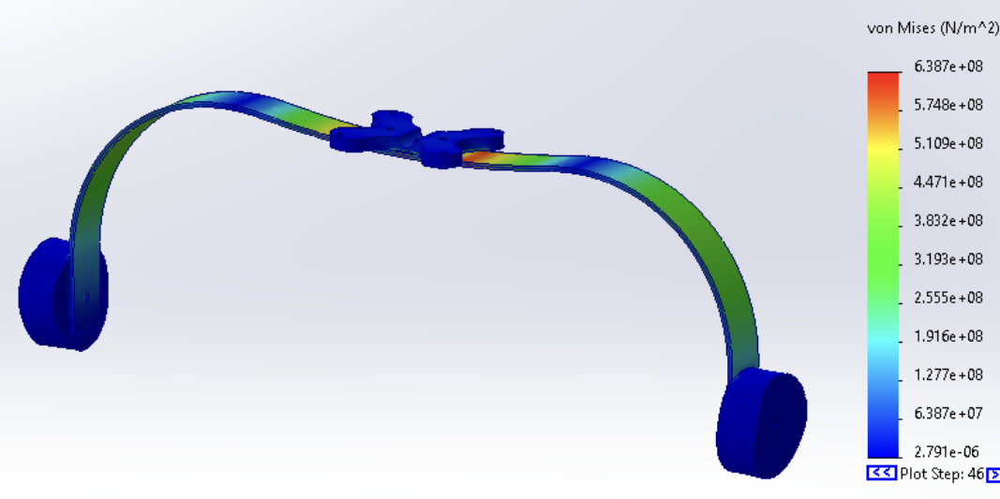
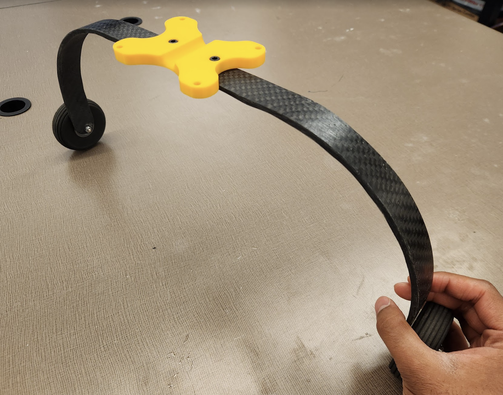
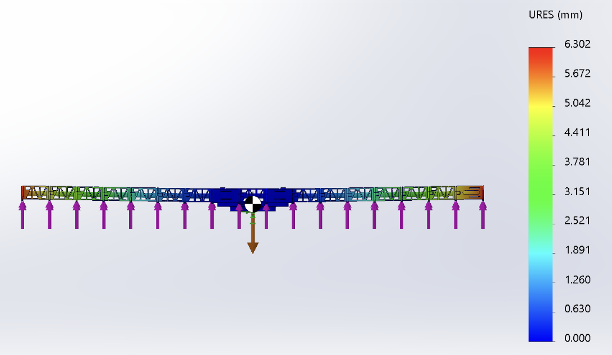
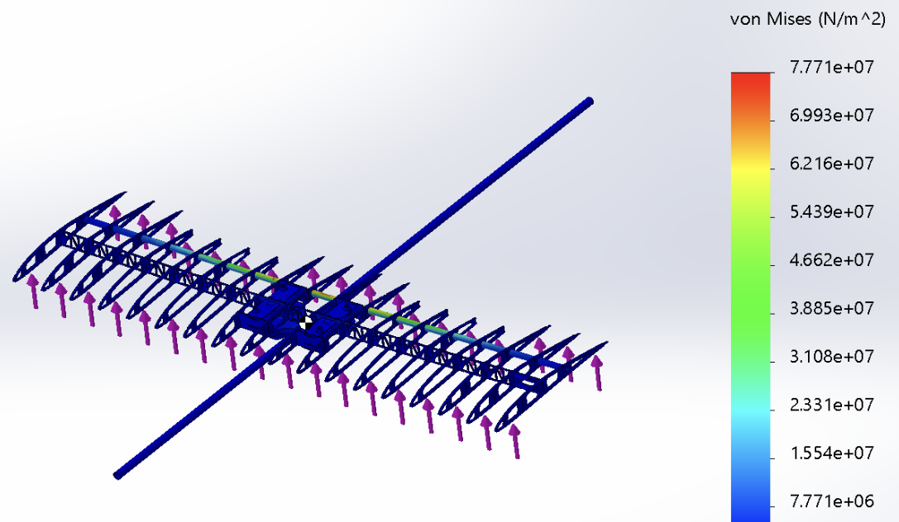
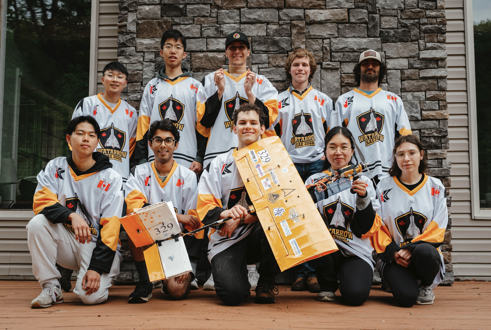

Bipedal Exosuit
Project Overview
This was WatArrow’s competition aircraft for SAE Aero Design East 2025. I was involved with numerous aspects of the development process alongside other members of our team. Two of the more technically challenging projects I was responsible for were landing gear development and wing structural analysis. Both projects required me to learn new skills, like SolidWorks Flow Simulation and FEA.
Landing Gear Development
I worked on this project with Veronika Markovich. The main objectives were:
- Reduce weight
- Increase strength (to survive crash landings)
Typically, these would be conflicting objectives, but we resolved this by selecting carbon fiber as the material. I spent lots of time experimenting with different fabrication techniques and resin-fiber combinations.
Fabrication Techniques
Initially, we considered fabricating the landing gear with a vacuum infusion, as this is what I had experience with from my previous involvement with the Formula Electric design team. However, this approach was quickly ruled out due to the need for costly vacuum pumps and support equipment. Then, we pursued wet-layup fabrication, for which I designed a 3D printed mold.

I designed 3 different versions of the mold in SolidWorks, each resolving issues from the previous one:
- Version 1 had no way to secure the mold while it was being used and too much resin pooled due to its high walls. I resolved this by adding mounting features and modifying the mold profile to allow better resin settling.
- Version 2 cracked when trying to remove the cured carbon fiber component, thus preventing re-use. I resolved by introducing dovetail joints to act as deliberate failure points, ensuring that the mold could separate in a predictable manner and be reassembled quickly.
- Version 3 wasn’t perfect, but it got the job done!
Version 3, shown below, also incorporated jigs that could be used to locate the positions of holes that had to be drilled for wheel mounting. These holes were then used as a datum for an additional jig to assist with trimming using a Dremel.

Resin-Fiber Combinations
Multiple early prototypes of the landing gear helped us come to the following conclusions regarding optimal resin-fiber combinations:
- 3k twill carbon fiber is far too flexible for this project
- At least 3 layers of 12k fiber are required for rigidity
- Alternating grain directions in the layers vastly improves strength
- The mass of resin used should be ~3 times the mass of fiber to ensure even coating

Validation
To ensure that the landing gear would be able to tolerate the stresses of a crash landing, I conducted FEA simulations in SolidWorks using the drop test feature. The simulated stresses were compared against the yield stresses of carbon fiber. The results of the FEA simulation are limited by the fact that the strength of carbon fiber can vary significantly with different composition techniques, which was noted in our design report for the competition.


Results
The final landing gear weighed just 75 grams, a reduction of 43% from the previous year.

Wing Structural Analysis
I was responsible for conducting structural analysis of the wing using SolidWorks Flow Simulation and FEA. I used the flow simulation to determine the following conditions for maximum lift (and thus maximum stress):
- Angle of attack of 4° (corresponding to a coefficient of lift of 0.45)
- Speed of 17 m/s
Solving the lift equation for these conditions provided a maximum lift of 18N, which is just above the fully-loaded aircraft weight of 16N. I applied a safety factor of 2 to both of these loads during FEA. As such, I applied a lift force of 36N to the ribs of the wing and a weight of 32N to the underside of the wing mount (which contains the aircraft’s center of gravity). Applying loads in these locations allowed for simplification of the simulation CAD, which made the simulations much faster to run.
The material I chose for the wing spar in the simulation was Mat VMA carbon fiber, which has an elastic modulus of 170 GPa and ultimate tensile strength of 1.4 GPa. Similar to the landing gear simulations described previously, this was a major assumption since the properties of carbon fiber vary greatly with fabrication techniques, and the exact techniques used in the fabrication of the spars is unknown since they were not made in-house.
Simulation results of an initial design of the wing revealed that it would rapidly deflect at the edges, so I suggested lengthening the internal carbon fiber spar to enhance rigidity. I validated this with another simulation, which showed a 90% reduction in deflections.


Competition
Below is a photo of our team during the competition, which took place in Texas in May 2025. Our team placed 5th overall in the Micro class and 3rd for the flight component!
